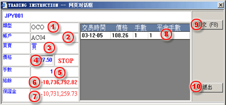

Placing an OCO Order
當用戶設置了Limit/Stop平倉指令同時還要設置一對指令分別爲better指令和stop指令，執行完成時只有一條指令能成功被執行，而另一指令同時將被取消。
當用戶完成第一步指令設置，單擊OCO按鈕將出現如下對話框，用戶應填寫以下信息：
| 1 | 類型 - OCO類型 |
 OCO
Order processing dialogue |
| 2 | 帳戶 - 交易帳戶,不可選擇。 | |
| 3 | 買賣 - 買賣類型，不可更改。 | |
| 4 | 價格 - 輸入觸發交易的價格。 | |
| 5 | 手數 - 指令數量，不可更改。 | |
| 6 | 餘結 - 所選擇帳戶的餘結。 | |
| 7 | 保證金 - 所選擇帳戶的有效保證金。 | |
| 8 | 平倉手數 - 平倉手數不可變。 | |
| 9 | 提交(F8) - 提交指令操作。 | |
| 10 | 退出 - 退出當前對話框。 |
用戶在最後提交指令操作前必須確保填寫的正確性,應仔細對校驗對話框進行核對。
提交完成後兩條指令將同時以未確認 狀態顯示在 工作列表面板 如果指令順利成交則以 已確認 狀態顯示，如若出現異常而未能成交則顯示爲 已取消 狀態。且當一條指令能成功被執行並以已確認 狀態顯示，而另一指令同時將被取消並以 已取消 狀態顯示。
指令被取消原因：